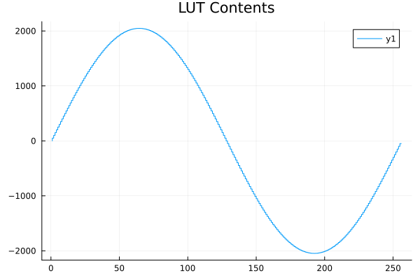
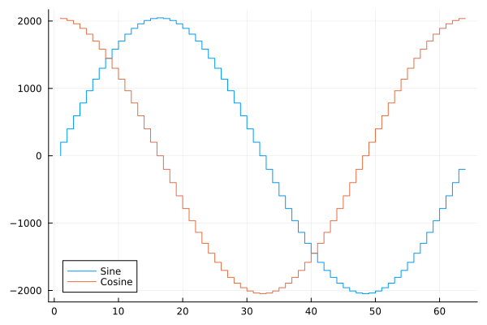

Basic Use
Let's create a lookup table for a 12-bit DAC.
using ..SineTables
using Plots
# Create a sine lookup table with integer
sine_table = create_sine_table(
Int16, # LUT type
256, # Number of pints
0, # Bias
2047 # Scaling
)
# Fetch a sine value for a phase (in radians)
sine_value = lut_sine(sine_table, pi / 4) # For phase = π/4
# Fetch a cosine value for the same phase
cosine_value = lut_cosine(sine_table, pi / 4)1447length(sine_table.table)256plot(sine_table.table, linetype = [:steppre], title="LUT Contents")
Now we can make a sine with our LUT.
# Create a vector of the sine values for a full period
sine_period = [lut_sine(sine_table, 2 * pi * i / 64) for i in 0:63]
cosine_period = [lut_cosine(sine_table, 2 * pi * i / 64) for i in 0:63]
plot(sine_period, linetype = [:steppre], label = "Sine")
plot!(cosine_period, linetype = [:steppre], label = "Cosine")The below plot shows the resulting sine and cosine period.
